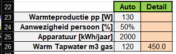
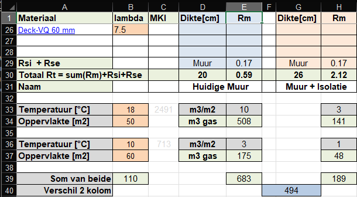

Tussenwoning
Hoekwoning
Vrijstaand
Semi-bungalow = GebruiksOppervlakte wordt voor 2/3 op de begane grond gesitueerd
Bungalow = GebruiksOppervlakte wordt geheel verdeeld over de begane grond
Het energieverbruik per m2 GebruikersOppervlakte wordt berekend door het optellen van de volgende elementen
- kWh nodig voor verwarming (verondersteld door gas, dus PEF=1.0)
- kWh voor warm tapwater (forfaitaire waarde uit de NTA8800)
- kWh voor de installaties, rekening houdende met de PEF
- kWh opgebracht door zonnepanelen, rekening houdend met de PEF
Je kunt er van uitgaan dat het gasverbruik voor het koken verwaarloosbaar is. Daardoor kun jet werkelijk gasverbruik voor bad en douche erg goed inschatten op basis van het verbruik in de zomermaanden. Vul die waarde in het roze veld. Hieronder een 2-persoons huishouden dat vrij zuinig doucht, maar toch een zeer hoog verbruik heeft (60 m3 moet goed mogelijk zijn). Dit blijkt een oude CV-ketel te zijn die niet uit de comfortstand gehaald kan worden.

Aan het rekenblad Rt, is een extra berekening voor het gasverbruik toegevoegd.
Hier als voorbeeld een huis met een lege spouwmuur, Rt=0.6 (cel E30).
Als de muur 6 cm spouwbreedte heeft, wordt bij na-isolatie de Rt=2.1 (cel H30).
Stel er wordt alleen op de begane grond verwarmd,
dan vullen we de gemiddelde temperatuur beneden en het muuroppervlakte in cellen B33 en B34.
De gemiddelde temperatuur en oppervlakte van de bovenverdieping en zolder vullen we in in B36 en B37.
We zien dat het "gasverbruik" van de totale muur nu 683 m3 bedraagt (cell E39)
Na isolatie bedraagt het gasverbuik van de muur 189 m2 (cell H39).
De winst bedraagt dus 494 m3 gas per jaar (cell G40)
